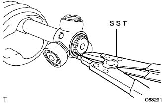

Front drive shaft (4WD) decomposition |
| 1. Front axle inn Boots Joint Boots Clamp LH No.2 |
For hooked clamps
Use a needle nose plier to remove the hook, and remove the front axlein board joint boots clamp LH No.2.
For one -touch clamps
Use a minus thin blade driver to solve the front axlein board joint boots clamp LH No.2, and remove the front axlein board joint boots clamp LH No.2 from the innbo board joint boots.
| 2. Front Axle Inn Boots Joint Boots Clamp RH No.2 |
| 3. Front axle innboard joint boots clamp LH removed |
For hooked clamps
 |
Use the needle nose pliers to remove the hook and remove the front axle in -in board joint boots clamp LH.
For one -touch clamps
 |
Use a negative thin -blade driver to solve the front axlein board joint boots clamp LH, and remove the front axle in -board joint joint boots clamp LH from the Inn Board Joint Boots.
| 4. Front axle innboard joint boots Clamp RH |
| 5. Front axle in -board jeinery boots separate |
Separate the inboord joint boots from the front drive -in board joint ASSY LH.
| 6. Remove the front drive innboard joint ASSY LH |
Grease is removed from the inboord joint.
 |
Mark to match the front drive -in board joint Assy LH and the front drive outboard joint Assy LH.
Remove the front drive innovation joint Assy LH from the front drive outboard joint shaft ASSY LH.
Put the front drive outboard joint shaft ASSY LH with a vise via an aluminum plate.
|  |
Use the SST to remove the front drive innhaft slogging INN LH.
 |
Attach the mark to the point in the figure, use a brass bar and a hammer to remove the trap joint ASSY.
Remove the front axlein board joint boots and the inboord joint boots clamp LH.
| 7. Remove the front drive innboard joint ASSY RH |
| 8. Remove the front drive shaft Dampa RH |
 |
For one -touch clamps
Use a negative thin -blade driver to solve the driving shaft Danpa clamp, and remove the drive shaft Danpa clamp from the front drive shaft Dampa RH.
In the case of a hook clamp
Use a needle nose plier to remove the hook, and remove the front drive shaft Dampa RH from the front drive outboard joint shaft ASSY RH.
| 9. Front Axle Outboard Joint Boots Clamp LH No.2 |
Use a minus thin blade driver to solve the front axle out board joint boots clamp LH No.2, and remove the front axle outboard joint boots clamp LH No.2 from the outboard joint boots.
| 10. Front Axle Outboard Joint Boots Clamp RH No.2 |
| 11. Front Axle Outboard Joint Boots Clamp LH removed |
 |
Use a minus thin blade driver to solve the front axle out board joint boots clamp LH, and remove the front axle outboard joint boots clamp LH from the outboard joint boots.
| 12. Front Axle Outboard Joint Boots Clamp RH removed |
| 13. |
Remove the drive shaft outboard joint boots from the front drive outboard joint Joint shaft ASSY LH.
Grease is removed from the outboard joint.
| 14. Front drive shaft holes napping LH removed |
 |
Use a flathead screwdriver to remove the front drive shaft hole napping LH.
| 15. Front drive shaft dust cover LH removed |
 |
Use SST and press to remove the front drive shaft dust cover LH.
| 16. Front drive shaft holes napping RH removed |
 |
Use SST to remove the snap ring.
| 17. Remove the front drive shaft bearing |
 |
Use SST and press to remove the bearing from the Inn Board Joint ASSY RH.
Remove the drive shaft bearing bracket holesnap ring.